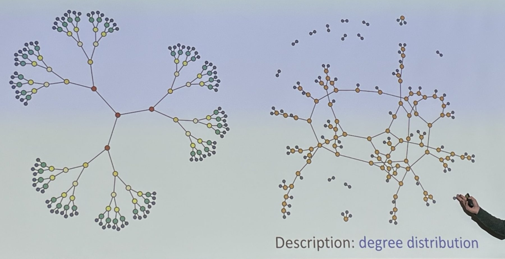

Degree distribution
연결선수 분포| tree | now | |
|---|---|---|
| links링크 | 189 | 189 |
| components연결 덩어리 | 1 | 1 |
| independent loops독립 고리 m−n+c | 0 | 0 |
| largest component가장 큰 덩어리 | 190 | 190 |
| isolated pairs고립된 노드 쌍 | 0 | 0 |
What the slide shows 슬라이드에 그려진 것

The tree on the left of the slide is a Cayley tree. The central node has three neighbours, every other internal node has one parent and two children, and the branching stops after six generations. Counting outward, that gives
n = 1 + 3 + 6 + 12 + 24 + 48 + 96 = 190, m = n − 1 = 189,
with 94 nodes of degree 3 and 96 leaves of degree 1. In the slide the tree is coloured by generation (red, yellow, pale yellow, yellow, green, navy); use Color by generation to see that version.
The network on the right of the slide has only two node colours: orange for degree 3 and navy for degree 1. It is the same 190 nodes with the same degrees, joined by the configuration model: a large tangled component full of loops, a few small stars, and a scatter of isolated pairs at the top, which are two leaves whose stubs happened to be paired with each other.
슬라이드 왼쪽은 케일리 트리입니다. 중심 노드에 이웃이 셋, 나머지 내부 노드는 부모 하나에 자식 둘을 가지며 여섯 세대에서 멈춥니다. 노드 190개, 링크 189개이고, 연결선수 3인 노드 94개와 연결선수 1인 잎 96개로 이루어집니다. 오른쪽은 같은 연결선수열을 구성 모형으로 이은 네트워크로, 주황색은 연결선수 3, 남색은 연결선수 1입니다.
What to notice 눈여겨볼 점
The degree distribution is a property of the stubs, not of the wiring. In the panel at the top right, the bars count stubs per node and never move. The dots count the links attached to each node right now: they fall to k = 0 when the tree is cut and climb back onto the bars as the stubs are rewired. Both networks have p1 = 96/190 and p3 = 94/190.
Everything else changes. A tree has exactly one component and no loops. After rewiring, the count of independent loops m − n + c is typically above ten, because the stubs no longer know which branch they came from.
Isolated pairs are expected. A random pairing of the 2m = 378 stubs joins two particular stubs with probability 1/377, so the expected number of leaf–leaf pairs is
⟨# pairs⟩ = (96 choose 2) / 377 = 4560 / 377 ≈ 12,
about what the slide shows above its main component.
A giant component still forms. Following a random link to a node of degree k happens with probability k pk/⟨k⟩, and that node offers k − 1 new links. The Molloy–Reed criterion asks whether this branching is above one:
⟨k2⟩ − 2⟨k⟩ = 4.96 − 3.98 = 0.98 > 0.
Solving u = q0 + q2u2 with excess-degree probabilities q0 = 96/378 and q2 = 282/378 gives u ≈ 0.34, and the giant component holds a fraction S = 1 − p1u − p3u3 ≈ 0.81 of the nodes, about 154 of 190. Press New wiring a few times and compare with the “largest component” row.
연결선수 분포는 링크를 어떻게 잇느냐가 아니라 각 노드가 가진 미연결 링크 수로 정해집니다. 반면 트리에는 고리가 없지만, 다시 이은 네트워크에는 고리가 여럿 생기고, 잎끼리 짝지어진 고립된 쌍이 평균 12개쯤 나타나며, 몰로이–리드 조건 ⟨k2⟩ − 2⟨k⟩ > 0을 만족하므로 노드의 약 81%가 거대 연결 덩어리에 속합니다.
The pairing in step 4 is a uniformly random matching of all stubs. Matchings that would create a self-loop or a double link are thrown away and drawn again, so the result is a simple graph, like the one on the slide. 4단계의 짝짓기는 모든 미연결 링크의 균일한 무작위 짝짓기입니다. 자기 고리나 중복 링크가 생기는 짝짓기는 버리고 다시 뽑으므로 결과는 슬라이드처럼 단순 그래프입니다.